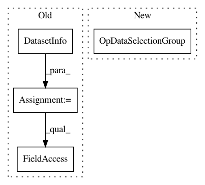

bff67338758d31c3562a9d9d9f768834d2d94032,tests/test_applets/dataSelection/testOpDataSelectionGroup.py,TestOpDataSelectionGroup,testNoChannelAxis,#TestOpDataSelectionGroup#,123
Before Change
noChannelData = numpy.random.random( (100,100) )
numpy.save(noChannelFilename, noChannelData)
info = DatasetInfo()
info.filePath = noChannelFilename
info.axistags = vigra.defaultAxistags("xy")
graph = Graph()
After Change
info = DatasetInfo(filepath=noChannelFilename, axistags = vigra.defaultAxistags("xy"))
op = OpDataSelectionGroup(graph=Graph())
op.WorkingDirectory.setValue( self.workingDir )
op.DatasetRoles.setValue( ["RoleA"] )
op.DatasetGroup.resize( 1 )
In pattern: SUPERPATTERN
Frequency: 3
Non-data size: 4
Instances
Project Name: ilastik/ilastik
Commit Name: bff67338758d31c3562a9d9d9f768834d2d94032
Time: 2019-07-26
Author: tomaz.vieira@embl.de
File Name: tests/test_applets/dataSelection/testOpDataSelectionGroup.py
Class Name: TestOpDataSelectionGroup
Method Name: testNoChannelAxis
Project Name: ilastik/ilastik
Commit Name: bff67338758d31c3562a9d9d9f768834d2d94032
Time: 2019-07-26
Author: tomaz.vieira@embl.de
File Name: tests/test_applets/dataSelection/testOpDataSelectionGroup.py
Class Name: TestOpDataSelectionGroup
Method Name: test
Project Name: ilastik/ilastik
Commit Name: bff67338758d31c3562a9d9d9f768834d2d94032
Time: 2019-07-26
Author: tomaz.vieira@embl.de
File Name: tests/test_applets/dataSelection/testOpDataSelectionGroup.py
Class Name: TestOpDataSelectionGroup
Method Name: testWeirdAxisInfos